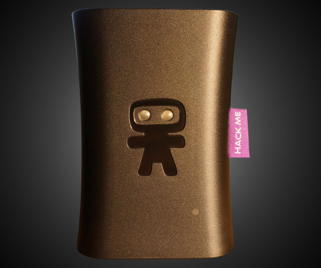
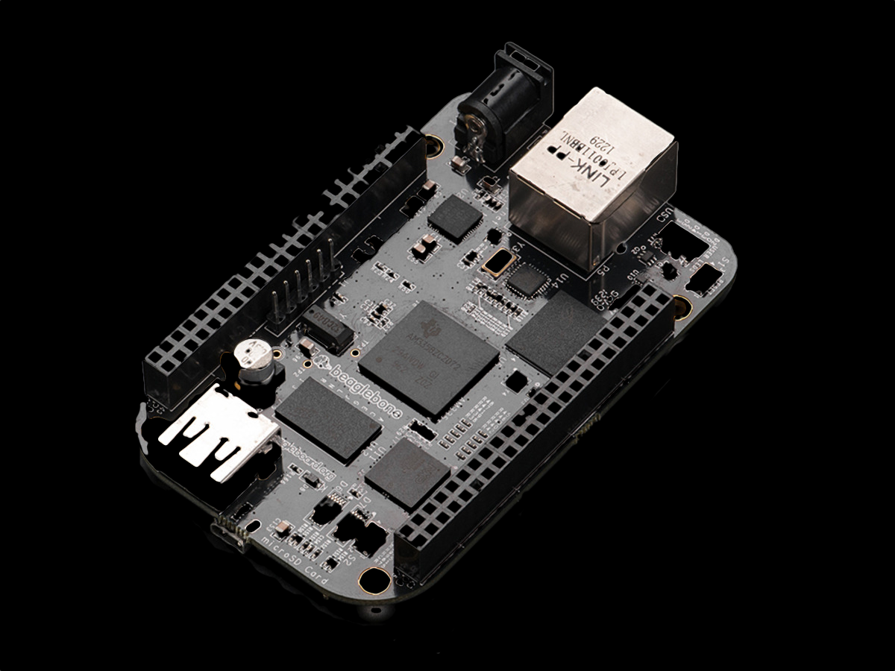
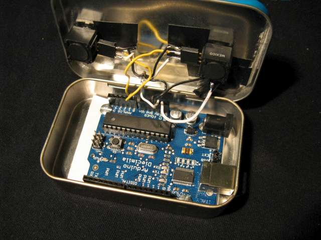
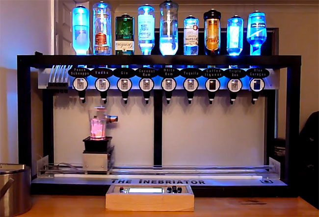
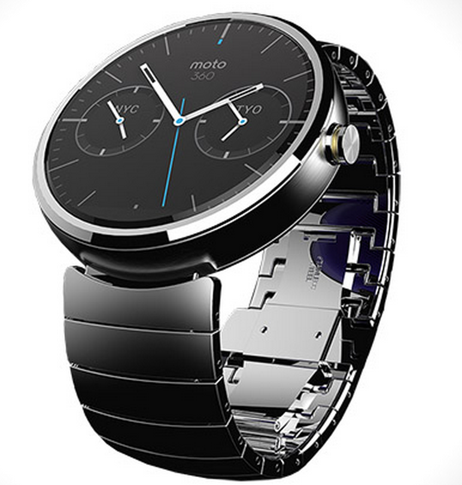
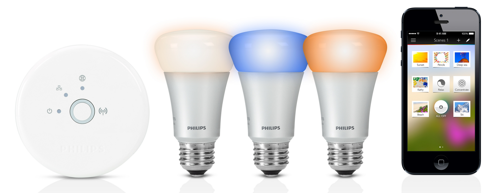

En intro
Multi trillion dollar industry

ZDNet 5.juni 2014
$7.1 trillion
=
$7 100 000 000 000
=
$7 100 000 000 000
=
46 342 339 000 000 kr
=
46 000 milliarder kroner
46 342 339 000 000 kr
=
46 000 milliarder kroner
=
≈ 37 statsbudsjetter
≈ 37 statsbudsjetter


Program for dagen
- Om Internet of Things <––
- Intro til IoT-snekring
- Prototypebrett
- Lag noe tøft – fordi du kan
- Driver statens veivesen med IoT!?

Gartner Hype Cycle for Emerging Tech
For hva er egentlig IoT?
Maker-bevegelsen




Problem of Scale
Personlig elektronikk


Internet of Things
vs